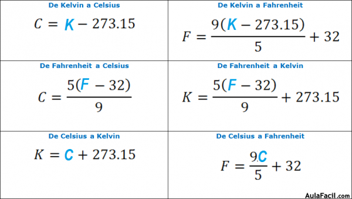

Escalas de Temperatura
Las escalas de temperatura son sistemas de medición utilizados para cuantificar el nivel de calor o frío de un objeto o sustancia. Existen varias escalas de temperatura utilizadas en diferentes partes del mundo, las más comunes son:
- Celsius (°C): La escala Celsius es ampliamente utilizada en la mayoría de los países. El punto de congelación del agua se define como 0°C y el punto de ebullición del agua a presión atmosférica se define como 100°C. Esta escala se basa en dividir el rango de temperaturas entre esos dos puntos en 100 partes iguales.
- Fahrenheit (°F): La escala Fahrenheit se utiliza principalmente en Estados Unidos y en algunos países de habla inglesa. En esta escala, el punto de congelación del agua se define como 32°F y el punto de ebullición como 212°F. La escala Fahrenheit también se divide en 180 partes iguales entre esos dos puntos.
- Kelvin (K): La escala Kelvin es utilizada en la comunidad científica y en situaciones donde se requiere una medición absoluta de la temperatura. En esta escala, el cero absoluto, que es la temperatura más baja posible, se define como 0 Kelvin (0K). La escala Kelvin no utiliza el símbolo de grado (°) y se divide en la misma escala que el Celsius, es decir, 100 partes entre el punto de congelación y el punto de ebullición del agua.
Dato curioso: La escala Celsius y la escala Kelvin tienen la misma unidad de medida, por lo que una diferencia de 1 grado Celsius es igual a una diferencia de 1 Kelvin. Sin embargo, la escala Fahrenheit tiene una relación de cambio de temperatura diferente, por lo que una diferencia de 1 grado Fahrenheit no es igual a una diferencia de 1 grado Celsius o 1 Kelvin.
Dilatación Térmica
La dilatación térmica es el fenómeno en el que los cuerpos experimentan un cambio en su tamaño debido a la variación de temperatura. Existen tres tipos principales de dilatación térmica:
Dilatación Lineal:
La dilatación lineal ocurre en cuerpos unidimensionales, como barras o alambres. Se puede calcular utilizando la siguiente fórmula:
ΔL = α * L0 * ΔT
- ΔL: Cambio en la longitud del objeto
- α: Coeficiente de dilatación lineal
- L0: Longitud inicial del objeto
- ΔT: Cambio en la temperatura
Dilatación Superficial:
La dilatación superficial ocurre en cuerpos bidimensionales, como placas o láminas. La fórmula para calcularla es:
ΔA = 2α * A0 * ΔT
- ΔA: Cambio en el área del objeto
- α: Coeficiente de dilatación superficial
- A0: Área inicial del objeto
- ΔT: Cambio en la temperatura
Dilatación Volumétrica:
La dilatación volumétrica ocurre en cuerpos tridimensionales, como sólidos o líquidos. Se puede calcular utilizando la siguiente fórmula:
ΔV = 3α * V0 * ΔT
- ΔV: Cambio en el volumen del objeto
- α: Coeficiente de dilatación volumétrica
- V0: Volumen inicial del objeto
- ΔT: Cambio en la temperatura
La dilatación térmica es un fenómeno importante a considerar en diversas aplicaciones y estructuras, ya que puede generar tensiones y deformaciones en los materiales. Comprender y tener en cuenta estos efectos es crucial en el diseño y la ingeniería de estructuras que estarán expuestas a cambios de temperatura.
Calor y Termodinámica
La termodinámica es la rama de la física que estudia los fenómenos relacionados con el calor y la transferencia de energía. En este contexto, hay varios conceptos importantes a considerar, como el calor específico, el calor latente y el calor cedido y otorgado:
Calor Específico:
El calor específico es una propiedad de los materiales que indica la cantidad de calor necesaria para elevar la temperatura de una unidad de masa de la sustancia en una unidad de temperatura. Se puede calcular utilizando la siguiente fórmula:
Q = m * c * ΔT
- Q: Calor transferido
- m: Masa del material
- c: Calor específico
- ΔT: Cambio en la temperatura
Calor Latente:
El calor latente es la cantidad de calor que se necesita para cambiar la fase de una sustancia sin cambiar su temperatura. Por ejemplo, el calor latente de fusión es la cantidad de calor necesaria para convertir una unidad de masa de sólido en el mismo tipo de líquido a una temperatura constante. El calor latente se puede calcular mediante la fórmula:
Q = m * L
- Q: Calor transferido
- m: Masa del material
- L: Calor latente
Calor Cedido y Otorgado:
El calor cedido y otorgado se refiere al intercambio de calor entre dos cuerpos o sistemas. Cuando un cuerpo cede calor a otro, su energía interna disminuye y su temperatura puede descender. Por otro lado, cuando un cuerpo recibe calor, su energía interna aumenta y su temperatura puede aumentar. El calor cedido o otorgado se puede calcular mediante la fórmula:
Q = m * c * ΔT
- Q: Calor transferido
- m: Masa del material
- c: Calor específico
- ΔT: Cambio en la temperatura
Ley de Coulomb
La Ley de Coulomb es una ley fundamental en el campo de la electrostática que describe la interacción entre cargas eléctricas. Esta ley establece que la fuerza eléctrica entre dos cargas es directamente proporcional al producto de las magnitudes de las cargas e inversamente proporcional al cuadrado de la distancia entre ellas.
Fórmula de la Ley de Coulomb:
La expresión matemática de la Ley de Coulomb es:
F = k * (|q1| * |q2|) / r^2
- F: Fuerza eléctrica entre las cargas
- k: Constante electrostática (depende del medio en el que se encuentran las cargas)
- q1, q2: Magnitudes de las cargas
- r: Distancia entre las cargas
Principales características de la Ley de Coulomb:
- La fuerza eléctrica es de naturaleza vectorial, lo que significa que tiene magnitud y dirección.
- La fuerza eléctrica entre cargas de igual signo es repulsiva, mientras que entre cargas de signos opuestos es atractiva.
- La fuerza eléctrica es inversamente proporcional al cuadrado de la distancia, lo que implica que disminuye rápidamente a medida que aumenta la separación entre las cargas.
- La Ley de Coulomb es válida tanto para cargas puntuales (cargas concentradas en un punto) como para cargas distribuidas en cuerpos extensos.
Intensidad de campo
La intensidad de campo eléctrico es una magnitud vectorial que indica la fuerza eléctrica que actúa sobre una carga de prueba en un punto dado del espacio. Se define como la fuerza eléctrica por unidad de carga. La intensidad de campo eléctrico se representa con el símbolo E.
Fórmula de la intensidad de campo eléctrico:
La fórmula para calcular la intensidad de campo eléctrico es:
E = F / q
- E: Intensidad de campo eléctrico
- F: Fuerza eléctrica
- q: Carga de prueba
Principales características de la intensidad de campo eléctrico:
- La intensidad de campo eléctrico es una cantidad vectorial, lo que significa que tiene magnitud y dirección.
- La dirección del campo eléctrico es la dirección de la fuerza que actuaría sobre una carga de prueba positiva colocada en ese punto.
- La intensidad de campo eléctrico es inversamente proporcional a la distancia cuadrada desde la carga fuente. A medida que aumenta la distancia, la intensidad de campo eléctrico disminuye.
Resistencia eléctrica
La resistencia eléctrica es una propiedad de los materiales que dificulta el flujo de corriente eléctrica a través de ellos. Se mide en ohmios (Ω) y se representa con el símbolo R. La resistencia eléctrica depende de la geometría del material, su conductividad y la temperatura.
Fórmula de la resistencia eléctrica:
La fórmula para calcular la resistencia eléctrica es:
R = V / I
- R: Resistencia eléctrica
- V: Voltaje
- I: Corriente eléctrica
Principales características de la resistencia eléctrica:
- La resistencia eléctrica convierte la energía eléctrica en otras formas de energía, como calor o luz.
- Los materiales conductores tienen baja resistencia, lo que permite el flujo fácil de la corriente eléctrica. Los materiales aislantes tienen alta resistencia.
- La resistencia eléctrica se puede modificar mediante la adición de componentes como resistencias, condensadores o inductores.
Potencia eléctrica
La potencia eléctrica es la cantidad de energía eléctrica consumida o suministrada por un dispositivo eléctrico por unidad de tiempo. Se mide en vatios (W) y se representa con el símbolo P. La potencia eléctrica se calcula multiplicando el voltaje (V) por la corriente eléctrica (I).
Fórmula de la potencia eléctrica:
La fórmula para calcular la potencia eléctrica es:
P = V * I
- P: Potencia eléctrica
- V: Voltaje
- I: Corriente eléctrica
Principales características de la potencia eléctrica:
- La potencia eléctrica determina la rapidez con la que se realiza el trabajo eléctrico o se consume la energía eléctrica.
- La potencia eléctrica se puede clasificar en potencia activa (W), potencia reactiva (VAR) y potencia aparente (VA).
- La potencia eléctrica se puede calcular también utilizando la fórmula P = I^2 * R o P = V^2 / R, donde R es la resistencia eléctrica.